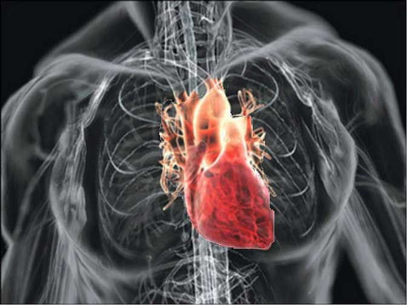

Визначення
Рак серця - рідкісне онкологічне захворювання, діагностувати яку за життя людини практично неможливо. В більшості випадків хворий живе з даними злоякісним новоутворенням, навіть не підозрюючи про своє страшний діагноз. Первинним, рак серця буває дуже рідко, в основному появі злоякісного новоутворення в цьому органі віРак серця - рідкісне онкологічне захворювання, діагностувати яку за життя людини практично неможливо. В більшості випадків хворий живе з даними злоякісним новоутворенням, навіть не підозрюючи про своє страшний діагноз. Первинним, рак серця буває дуже рідко, в основному появі злоякісного новоутворення в цьому органі відбувається внаслідок метастатичного занесення онкологічного процесу ззовні дбувається внаслідок метастатичного занесення онкологічного процесу ззовні
Рак серця - типи
Найбільш часто з первинних злоякісних новоутворень серця розвивається саркома. Вона може з'явитися в обох статей, в основному після 30 років. Дана пухлина виникає переважно в правих відділах серця і поширюється дуже швидко. Ракові клітини проростає всі шари і вени серцевого Рак серця - рідкісне онкологічне захворювання, діагностувати яку за життя людини практично неможливо. В більшості випадків хворий живе з даними злоякісним новоутворенням, навіть не підозрюючи про своє страшний діагноз. Первинним, рак серця буває дуже рідко, в основному появі злоякісного новоутворення в цьому органі відбувається внаслідок метастатичного занесення онкологічного процесу ззовні м'яза, а також всі великі артерії. Відбувається метастатичне ураження мозку, лімфатичних вузлів і легенів. Наступним типом раку серця є ангиосаркома (33% випадків), що проявляється множинними заповненими кров'ю сполученими між собою порожнистими новоутвореннями. У чоловіків ця пухлина зустрічається у три рази частіше, вражаючи будь-які відділи серця, однак найбільш часто праве передсердя. Крім цього практично в будь-якому віці (частіше у чоловіків) у посмугованої м'язової тканини може розвинутися рабдоміосаркома (20% випадків). З однаковою йязицірністю у осіб обох статей може виникнути фібросаркома (10% випадків), що представляє собою чітко обмежений вузол. Такі первинні злоякісні новоутворення як лімфома і мезотеліома зустрічаються дуже рідко. Вторинні злоякісні пухлини серця розвиваються внаслідок метастатичного поширення наступних видів раку: легенів, грудей, шлунка, нирок. Вторинні ракові пухлини серця зустрічаються практично у 25 разів частіше первинних
Рак серця - симптоми
Симптоматика даного захворювання напряму залежить від величини обструкції порожнин серця і від місця локалізації пухлини. Найбільш типовим симптомом є швидко прогресуюча незрозуміла серцева недостатність з аритміями, тампонадою, порушеннями провідності, збільшенням розміру серця, больовими відчуттями в області грудної клітини, обструкцією порожнистої вени і раптовою смертю. У разі якщо злоякісне новоутворення обмежена міокардом і не поширене всередину порожнини, рак деякий час може протікати практично безсимптомно, або викликати незначні порушення провідності та аритмії. У хворого досить тривалий проміжок часу спостерігається незначне підвищення загальної температури тіла, поступово наростає загальна слабкість, з'являються болі в суглобах, відзначається зниження маси тіла, на кінцівках і тулубі проявляються різні висипання, пальці ніг і рук німіють. Згодом починають формуватися ознаки, що вказують на хронічну серцеву недостатність: зміни в аналізах крові, зміни нігтів за типом «годинних стекол», пальці рук худнуть, а їх кінці товщають (барабанні палички). Найбільш поширені симптоми раку серця : - Найбільш раннім і частим симптомом є біль всередині грудної клітини - При відсутності тампонади серця спостерігається прогресування синдрому верхньої порожнистої вени - Необхідність проведення повторних перикардиоцентезов - При відсутності в анамнезі травми спостерігається наявність гемоперикарду У разі поширення злоякісного новоутворення на перикардиальное простір часто спостерігається виникнення геморагічного випоту в перикард, що може стати причиною тампонади. Внаслідок того, що саркома найбільш часто вражає праву частину серця, з-за обструкції клапана легеневої артерії, тристулкового клапана, правого шлуночка та правого передсердя, спостерігається симптоматика правошлуночкової недостатності. Обструкція верхньої порожнистої вени призводить до набряку верхніх кінцівок та обличчя, тоді як у результаті обструкції нижньої порожнистої вени відбувається застій у внутрішніх органах
Рак серця - діагностика
На ранніх етапах перебігу захворювання, діагностика раку серця дуже складна, так як симптоми найчастіше маскуються під різні хвороби серця , діагностувати які самі по собі дуже непросто. Після ретельної оцінки усіх скарг пацієнта і клінічних симптомів показано проведення таких діагностичних процедур як: радіоізотопна вентрикулографія, ангіокардіографія, МРТ, КТ і УЗД. Для визначення прийнятної тактики оперативного втручання проводиться ехокардіографія. На момент постановки діагнозу саркома серця, у 80% пацієнтів вже спостерігаються метастази
Рак серця - лікування
Вибір тактики лікування залежить від стадії прогресування онкологічного процесу і від типу пухлини. У більшості випадків хірургічний шлях лікування раку серця, на відміну від більшості злоякісних новоутворень, не застосовується. Це безпосередньо пов'язано з тим, що до моменту виявлення захворювання пухлина вже зачіпає не тільки сам міокард, але і інші органи. Тому найчастіше методом лікування вибирають променеву терапію, яка може проводитися як в комплексі з хіміотерапією, так і як самостійний метод лікування. Для позбавлення пацієнта від супутніх раку серця симптомів, показано призначення симптоматичного лікування. Завдяки такому лікуванню існує можливість трохи призупинити вираженість і подальший розвиток ракової пухлини, що дозволяє приблизно на п'ять років продовжити життя пацієнта.